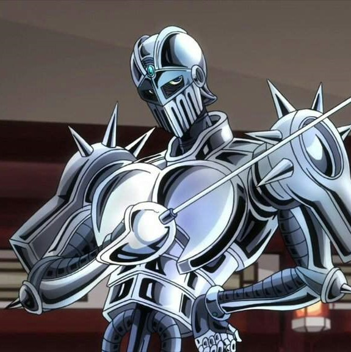

Hello! This will be a small wiki about stands from the popular show, "JoJo's Bizzare
Adventure" Click below on the stand's name to view more about them
Star Platinum
Jotaro Kujo

Silver Chariot
Jean Pierre Polnareff
Magician's Red
Muhammad Avdol
Hierophant Green
Noriaki Kakyoin
Hermit Purple
Joseph Joestar